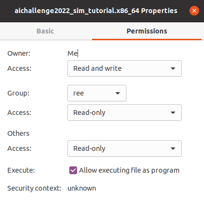
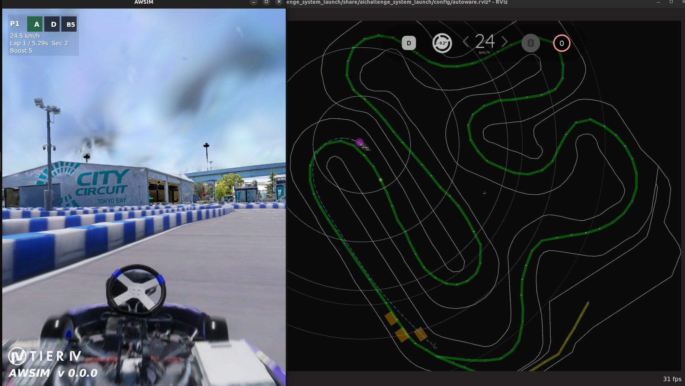

環境構築の流れ
この章では、自動運転 AI チャレンジ 2026（Racing Kart）の開発・実行環境を構築する手順を説明します。パッケージのインストール、仮想環境の構築、ワークスペース準備、Docker と AWSIMの起動までを、セットアップスクリプト一つで行います。
2025年度参加者向けの変更点
rockerは GUI 転送用途に限定し、プロセス管理は docker compose を活用しています。- 個別セットアップ手順を廃止し、一括インストール手順に統一しました。
環境構築
curlのパッケージをinstallしましょう。
sudo apt update
sudo apt install curl
次に環境からシミュレーターの実行テストまでを一気通貫で行うコマンドを叩きます。
curl -fsSL "https://raw.githubusercontent.com/AutomotiveAIChallenge/aichallenge-racingkart/main/setup.bash" | bash
再度環境構築を行う場合
リポジトリを取得済みの場合は、リポジトリ内のスクリプトを直接実行できます。
cd ~/aichallenge-racingkart
./setup.bash bootstrap
下記は setup.bash が対話形式で順に実施する内容です。必要な項目だけ開いて確認してください。
1. 必要パッケージを install
必要な基本パッケージを導入します。
sudo apt update
sudo apt install -y python3-pip ca-certificates curl gnupg
2. Docker を install
Docker公式リポジトリを追加して、Docker本体をインストールします。
sudo install -m 0755 -d /etc/apt/keyrings
curl -fsSL https://download.docker.com/linux/ubuntu/gpg | sudo gpg --dearmor -o /etc/apt/keyrings/docker.gpg
sudo chmod a+r /etc/apt/keyrings/docker.gpg
echo \
"deb [arch=$(dpkg --print-architecture) signed-by=/etc/apt/keyrings/docker.gpg] https://download.docker.com/linux/ubuntu \
$(. /etc/os-release && echo "$VERSION_CODENAME") stable" | \
sudo tee /etc/apt/sources.list.d/docker.list > /dev/null
sudo apt-get update
sudo apt-get install -y docker-ce docker-ce-cli containerd.io docker-buildx-plugin docker-compose-plugin
sudo docker run hello-world
3. rocker を install
GUI転送に使う rocker をインストールし、PATH を通します。
pip install rocker
~/.local/bin が PATH に含まれていない場合は追加します。
echo 'export PATH="$HOME/.local/bin:$PATH"' >> ~/.bashrc
source ~/.bashrc
4. Docker グループ登録
sudo なしでDockerを使えるようにユーザーをグループへ追加します。
sudo usermod -aG docker $USER
newgrp docker
5. リポジトリ準備
大会用リポジトリを取得し、事前チェックを実行します。
cd ~
git clone https://github.com/AutomotiveAIChallenge/aichallenge-racingkart.git
cd ~/aichallenge-racingkart
6. repositoryの確認
ちゃんとレポジトリが存在しているかチェック
./setup.bash doctor
7. Autoware イメージ取得
実行に必要なAutowareベースイメージを取得します。
docker pull ghcr.io/automotiveaichallenge/autoware-universe:humble-latest
docker images
Dockerイメージがダウンロードできていれば以下のような出力が得られます。
REPOSITORY TAG IMAGE ID CREATED SIZE
ghcr.io/automotiveaichallenge/autoware-universe humble-latest 30c59f3fb415 13 days ago 8.84GB
8. AWSIM データ取得/展開
SharePoint から AWSIM をダウンロードし、所定ディレクトリへ展開して実行権限を付与します。
- 以下から最新の
AWSIM.zipをダウンロードします。
mkdir -p ~/aichallenge-racingkart/aichallenge/simulator
unzip ~/Downloads/AWSIM.zip -d ~/aichallenge-racingkart/aichallenge/simulator
chmod +x ~/aichallenge-racingkart/aichallenge/simulator/AWSIM/AWSIM.x86_64
- 実行ファイルが以下に存在することを確認します。
ls ~/aichallenge-racingkart/aichallenge/simulator/AWSIM/AWSIM.x86_64
- パーミッションは以下の図の状態を参考にしてください。

GPU 利用時は AWSIM_GPU_**.zip を展開してください。
9. 開発用イメージ作成
開発用Dockerイメージをビルドします。
cd ~/aichallenge-racingkart
./docker_build.sh dev
10. ワークスペースビルド
Autowareワークスペースをビルドします。
cd ~/aichallenge-racingkart
make autoware-build
11. AWSIM + Autoware 起動 → make down で停止確認
シミュレータとAutowareを起動し、確認後に停止します。
cd ~/aichallenge-racingkart
make dev
make down
Setup画面の見方
Select branch [default: main]:が出たらmainを選択（Enterでも可）[y/N]は「この処理を実行するか」の確認です（通常はy）Starting execution...が表示されたら、セットアップが自動実行中ですTo stop: make downが表示されたら、起動確認まで完了です
[setup] ℹ️ Bootstrap mode (fresh host)
[setup] Available branches (remote):
[setup] 1) dev
[setup] Select branch [default: main]: main
[setup] ℹ️ Planned steps (answer y/N for each, then execution starts):
[setup] 1) Install base packages (apt)
[setup] 2) Install Docker (if missing)
[setup] 3) Install rocker (pip)
[setup] 4) Add user to docker group (recommended)
[setup] 5) Clone/update repository (branch=main) -> $USER/aichallenge-racingkart
[setup] 6) Repo preflight: ./setup.bash doctor (requires repo)
[setup] 7) Create .env (GPU/CPU auto-detect)
[setup] 8) Pull Autoware base image (requires repo)
[setup] 9) Download AWSIM.zip and extract (requires repo)
[setup] 10) Build dev image: ./docker_build.sh dev (requires repo)
[setup] 11) make autoware-build (requires repo)
[setup] 12) make dev DOMAIN_ID=1 (requires repo)
途中で [y/N] が表示されたら、問題なければ y を入力してください。
[setup] Install base packages (apt) [y/N]: y
[setup] Install Docker (if missing) [y/N]: y
[setup] Add user to docker group (recommended) [y/N]: y
[setup] Clone/update repository (branch=main) -> $USER/aichallenge-racingkart/aichallenge-racingkart [y/N]: y
[setup] Run repo preflight: ./setup.bash doctor [y/N]: y
[setup] Pull Autoware base image [y/N]: y
[setup] Download AWSIM.zip and extract [y/N]: y
[setup] Build dev image: ./docker_build.sh dev [y/N]: y
[setup] Run make autoware-build (this can take a while) [y/N]: y
[setup] Run make dev DOMAIN_ID=1 [y/N]: y
[setup] ℹ️ Starting execution...
[setup] ℹ️ Running: Install base packages (apt)
ここから先は5分程度待つだけです。コーヒーでも入れながら待ちましょう。

セットアップが終わると下記のような表示でAWSIMとAutowareが起動します。
Start dev simulation (AWSIM + Autoware, DOMAIN_ID=1)
make[1]: ディレクトリ '$USER/aichallenge-racingkart' に入ります
Start AWSIM
SIM_MODE=dev docker compose -f docker-compose.yml -f docker-compose.gpu.yml up -d simulator
[+] up 1/1
make[1]: ディレクトリ '$USER/aichallenge-racingkart/aichallenge-racingkart' から出ます 0.5s
make[1]: ディレクトリ '$USER/aichallenge-racingkart/aichallenge-racingkart' に入ります
Start Autoware for AWSIM
RUN_MODE=awsim DOMAIN_ID=1 docker compose -f docker-compose.yml -f docker-compose.gpu.yml up -d autoware
[+] up 1/1
✔ Container aichallenge-2026-autoware-1 Created 0.2s
make[1]: ディレクトリ '$USER/aichallenge-racingkart/aichallenge-racingkart' から出ます
To stop: make down (docker compose down --remove-orphans)
AWSIMとAutowareが起動しました。

停止する場合は以下コマンドで停止してください。cd ~/aichallenge-racingkart
make down
うまくいかない場合
- まずはログアウト・ログインしてから再度セットアップを試してください。Docker 関連の権限設定や各種パラメータ設定が反映されていない可能性があります
- ターミナルを上に遡ってエラーや警告が出ていないかを確認してください
./setup.bash doctorコマンドで環境チェックを実行できます。警告（warning）や情報（info）が表示された場合は、それぞれに示された対策をお試しください- NVIDIA 関連のエラーが出ていた場合・AWSIM が起動しない場合・描画に問題がある場合は、GPU の設定・動作設定をご確認ください
- AI 部門に参加する場合は Camera/LiDAR を有効にする必要があります。同ページの手順をご確認ください
- 稀にAWSIMの起動に失敗することがあります。AWSIMの画面のみ黒画となってしまう場合は、
make down_allコマンドで全コンテナを終了してから、再度試してください